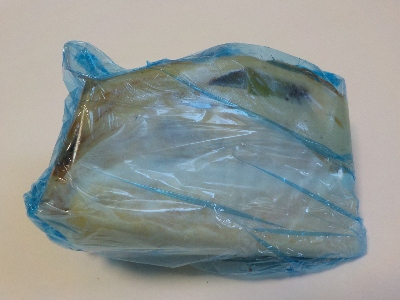
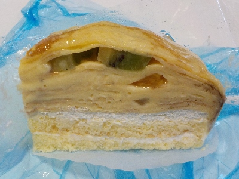
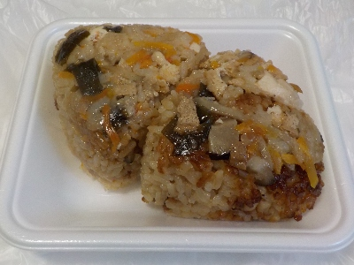
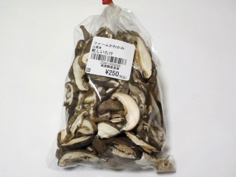
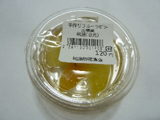
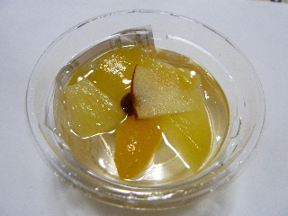
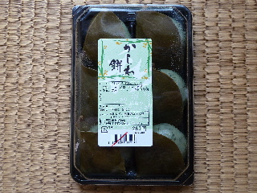
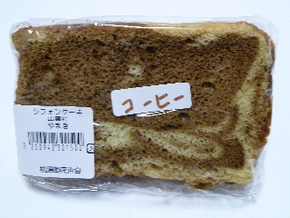
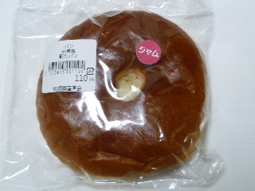
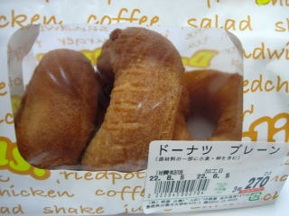

桃源直売所ドーム店の賞味期限切れのケーキ。
2024/08/06

ブルーの包装が独特ですね。
消費期限ではなく賞味期限切れのケーキを販売してました。菓子工房りーるさんのもののようです。180円でした。

フルーツが入ったミルクレープです。クレープ生地の味がしっかりあるので、クレープっぽいって思いながら食べました。
クレープとクリームで甘いんですが、柑橘系のフルーツがいくつか入っていて、スッキリ爽やかな感じもしました。
島根県出雲市矢野町920-1
2024/08/06

ブルーの包装が独特ですね。
消費期限ではなく賞味期限切れのケーキを販売してました。菓子工房りーるさんのもののようです。180円でした。

フルーツが入ったミルクレープです。クレープ生地の味がしっかりあるので、クレープっぽいって思いながら食べました。
クレープとクリームで甘いんですが、柑橘系のフルーツがいくつか入っていて、スッキリ爽やかな感じもしました。
2024/04/07

税込250円でした。
しっとりした炊き込みご飯ですけど、オコゲも入ってます。具も色々あって美味しかったです。
塩味よりも甘みがある炊き込みオニギリでした。
公園とかで食べるといいかもと思いました。
2022/12/25

カットしてあって使うのが簡単な干しシイタケを買いました。
見た目がキレイだいし量も多いので、なんとなくお買い得な感じがして買いました。
2013/10/19
夕方に桃源郷に寄りました。

手作りゼリーをみつけました。
桃源は閉店時間が早いので、夕方6時でもう半額になっていました。
なのでこのゼリーは60円です。
お惣菜も半額で販売していました。

蓋をあけるとこんな感じです。
寒天ゼリーにカットフルーツがトッピングされています。
シンプルなお菓子ですね。
余計なものが入っていない感じで、スッキリとした甘さが気持ち良かったです。
2012/05/20
桃源ドーム店って２周年なんですね。
お店に行ったら2周年記念って大きく書かれていました。
で、それでかどうかわ分からないですが、柏餅が半額でした。

とっても安かったです。
北陽製菓さんの柏餅です。
2011/06/26
桃源市場でシフォンケーキを買いました。

これって多伎のいちじく館でも販売してるやつですね。
ラップに包んであって、家庭的な感じがします。
安くて美味しくていい商品ですね。
2011/06/26
桃源市場（出雲市矢野町）で新生パン工場（出雲市神門町）のジャムパンを買いました。

しっかりとした焼き色がいいですね。パンの真ん中にある穴もなんか懐かしい感じがしていいです。
実際、ジャムが多く入った懐かしい感じのジャムパンでした。
美味しかったです。
2010/06/05
新しく出雲ドームの近くに出来た桃源に行きました。
野菜や果物を多く販売していて産直市場のような場所でした。道の駅っぽい感じもしますね。
惣菜を作って販売していた中に、ドーナツがあったので買って帰りました。

大きさがまちまちなのが手造り感があっていいですね。
プレーンドーナツは、甘さ控えめでとてもヘルシーな感じのドーナツでした。
このお店では、キムラヤ・ベルク・ホルンのパンが販売していました。色々そろっているのは便利ですね。